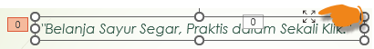
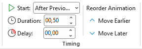

- Judul: Fade, Start After Previous
- TextBox: Wipe
Effect Options:- Sequence: As One Object
- Direction: From Left
pada Group Timing pilih Start: After Previous

Kenapa klik garis TextBox?
agar mudah menerapkan Start semua isi di dalam TextBox dengan otomatis, tidak menerapkan satu per satu. - TextBox: Wipe
Effect Options:- Sequence: By Paragraph
- Direction: From Left
- Sayur: Zoom, Start After Previous